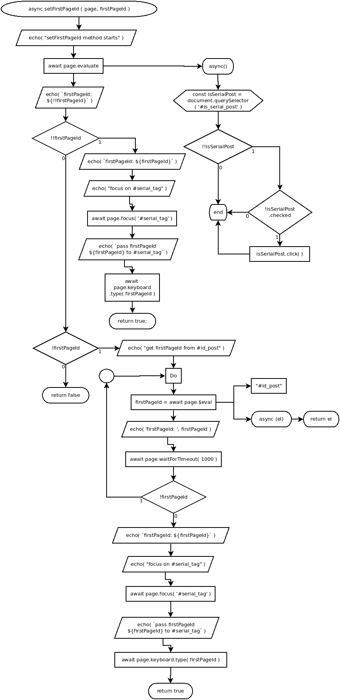

async setFirstPageId ( page, firstPageId )
Flowchart

Code
async setFirstPageId ( page, firstPageId ){ //
echo( "setFirstPageId method starts" ); //
await page.evaluate( //
async () => { //
const isSerialPost = document.querySelector( '#is_serial_post' );
if( !!isSerialPost ){ //
if( !isSerialPost.checked ){ //
isSerialPost.click(); //
}
}
}
);
echo( `firstPageId: ${!!firstPageId}` ); //
if( !!firstPageId ){ //
echo( `firstPageId: ${ firstPageId }` ); //
echo( "focus on #serial_tag" ); //
await page.focus( '#serial_tag' ); //
echo( `pass firstPageId ${firstPageId} to #serial_tag` ); //
await page.keyboard.type( firstPageId ); //
return true; //
} else if( !firstPageId ){ //
echo( "get firstPageId from #id_post" ); //
do{ //
firstPageId = await page.$eval( "#id_post", async el => el.value ); //
echo( 'firstPageId: ', firstPageId ); //
await page.waitForTimeout( 1000 ); //
}while( !firstPageId ); //
echo( `firstPageId: ${firstPageId}` ); //
echo( "focus on #serial_tag" ); //
await page.focus( '#serial_tag' ); //
echo( `pass firstPageId ${firstPageId} to #serial_tag` );
await page.keyboard.type( firstPageId );
return true;
}
return false;
}